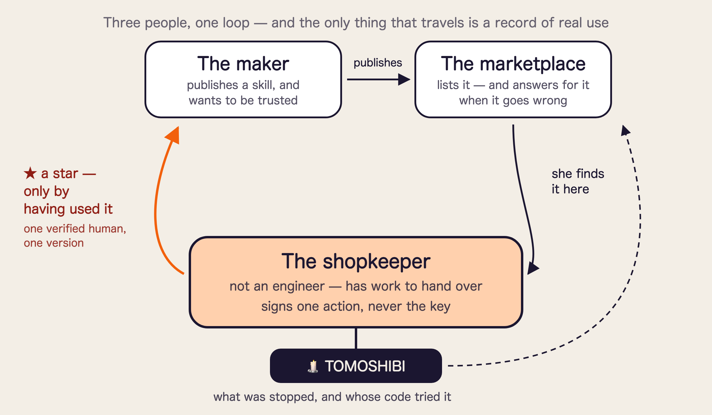

Someone in this room pasted an API key into an AI agent this week.
Maybe this morning.
And it is never just one. One per agent, one per skill, one per service.
What the AI era quietly handed us to manage is not prompts, and not models. It is keys.
The key is in the agent's hand.
Every arrow goes through.
no limit · no expiry · no record
The key stays behind a gate; the agent holds only a label.
Most pass · one waits for a finger · one is struck out.
scope · count · expiry · a record of both
| The key is never handed over | → there is no key anywhere to leak from |
| It asks only when it matters | → it stays out of the way, so it stays switched on |
| Every refusal is kept, with who tried | → "it was being used and I had no idea" stops being possible |
| What she was trying to do | What she gets |
|---|---|
| Process the day's orders | It asks nothing |
| Refund a customer | A payment happens only when she presses the button |
| A tool reaches somewhere else | Every use is visible afterwards |
| That tool is quietly updated | Old praise does not carry to new code |
| Look back at the week | Allowed and stopped, in one record |
| What the person gets | What produces it |
|---|---|
| The key sits outside the agent | The secret is put in at the moment of sending; the agent holds a label |
| A payment happens only when you press the button | 0G weighs every request first; only heavy ones reach the Ledger |
| Every use is visible afterwards | An append-only trail — with the signature of whatever tried it |
| You see the opinion of people actually using it | World ID + real use, per version — and they go out on a version bump |
Each one is something running, not something promised.
4
Metered judgement and flame display. No percentage of the money that moved — so we are never a company that loses money the more it stops.
5So that trusting an agent with something real is a thing an ordinary person can afford to do.
Nothing to memorise, store or manage. It cannot go past what you signed. And whatever happens, you can see it afterwards.